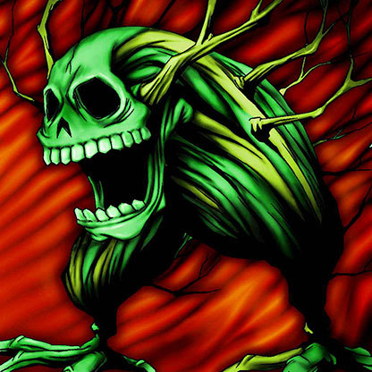

Wood Remains

Description: "When this card is flipped face-up, all Wood Remains are increased by 500 points."
STATS
ATK: 1000
DEF: 900DECK COST
Deck Cost per Card: 24EFFECT NOT IMPLEMENTED
Fusion List (19 Possible Fusions)
- Wood Remains + Abyss Flower = Pumpking the King of Ghosts
- Wood Remains + Armed Ninja = Zombie Warrior
- Wood Remains + Baby Dragon = Dragon Zombie
- Wood Remains + Dark Plant = Pumpking the King of Ghosts
- Wood Remains + Darkworld Thorns = Pumpking the King of Ghosts
- Wood Remains + Dragon Statue = Dragon Zombie
- Wood Remains + Griggle = Pumpking the King of Ghosts
- Wood Remains + Haniwa = Stone Ghost
- Wood Remains + Laughing Flower = Pumpking the King of Ghosts
- Wood Remains + Mammoth Graveyard = Great Mammoth of Goldfine
- Wood Remains + Man Eater = Pumpking the King of Ghosts
- Wood Remains + Mushroom Man = Pumpking the King of Ghosts
- Wood Remains + Petit Dragon = Dragon Zombie
- Wood Remains + Princess of Tsurugi = Zombie Warrior
- Wood Remains + Rainbow Flower = Pumpking the King of Ghosts
- Wood Remains + Sectarian of Secrets = Magical Ghost
- Wood Remains + Tentacle Plant = Pumpking the King of Ghosts
- Wood Remains + Unknown Warrior of Fiend = Zombie Warrior
- Wood Remains + Yamatano Dragon Scroll = Dragon Zombie